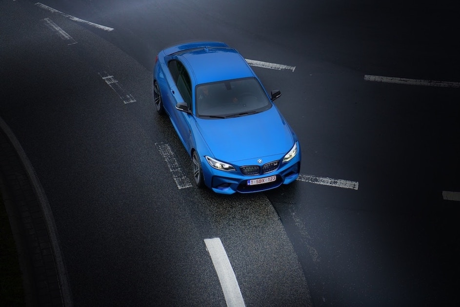
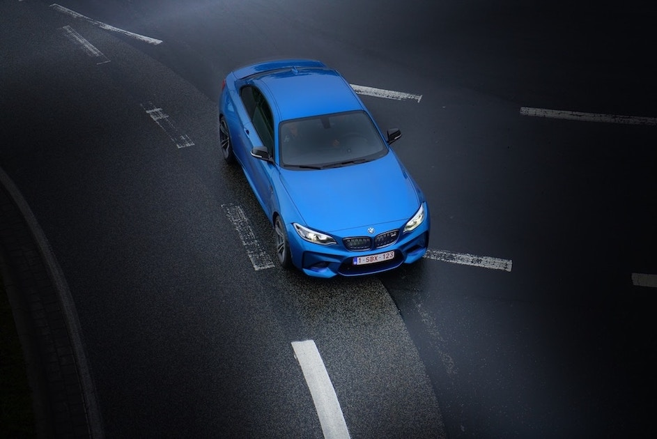
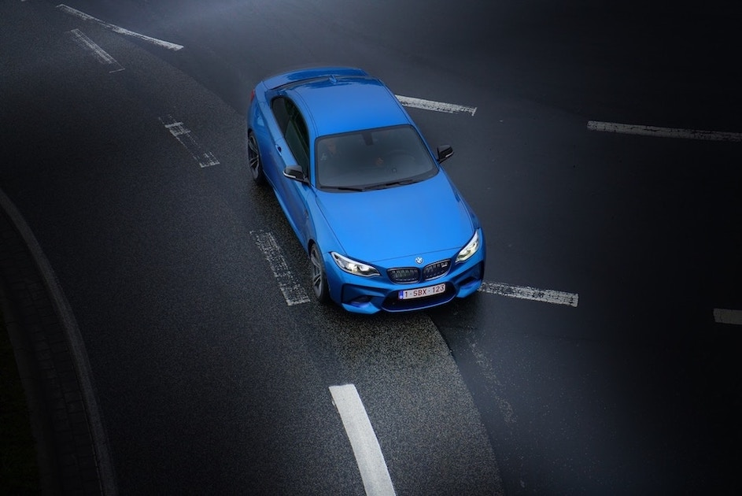
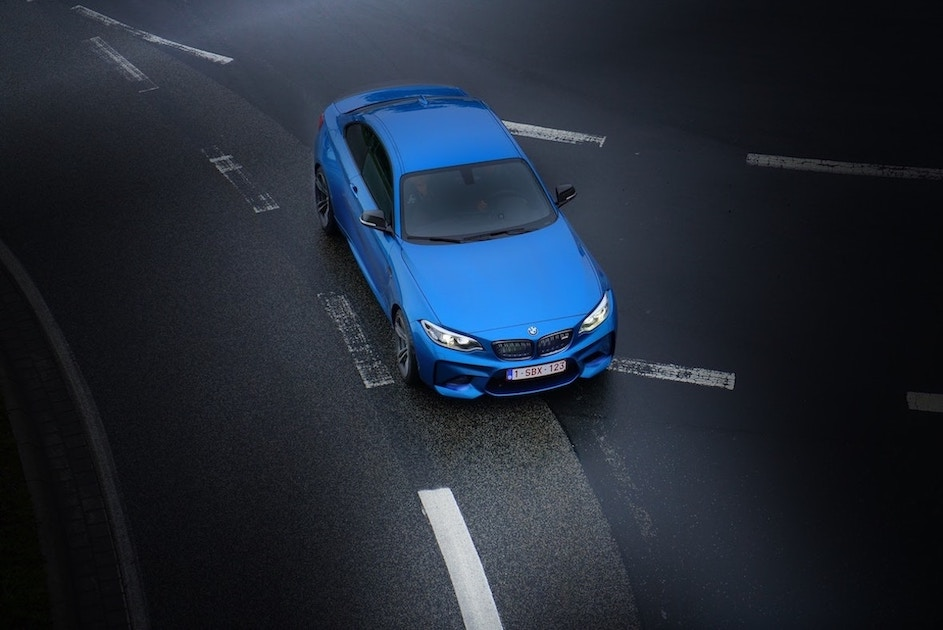

 

The 8 Series was introduced in 1990 under the E31 model code and was only available as a two-door coupé. It is powered by a range of naturally aspirated V8 and V12 petrol engines. The E31 started production just as E24 6 Series production ended, however it is not considered a direct successor. It was later discontinued in 1999 due to poor sales The model range was later reintroduced in 2018 with the second generation, G15 8 Series. It is expected to launch in coupé (G15), convertible (G14), and four-door Gran Coupé (G16) body styles, as the successor to the F06/F12/F13 6 Series lineup.The G15 8 Series introduces an inline-six diesel engine, and a high-performance M8 model is also expected to be launched in the future.